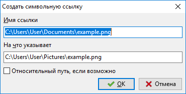
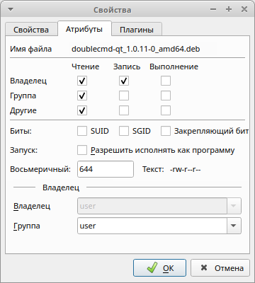
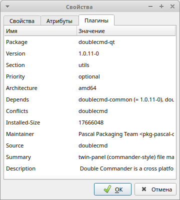
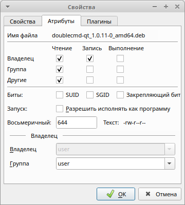
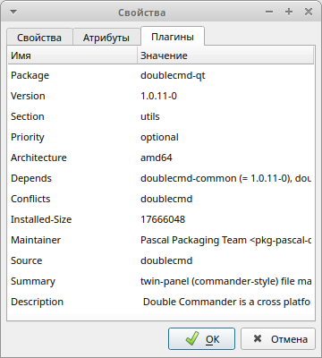
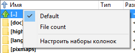

Добро пожаловать в Double Commander!
Double Commander – продукт отечественного программиста Александра Коблова (Alexx2000@mail.ru), основанный на Sexi Commander (автор – Radek Cervinka, radek.cervinka@centrum.cz).
Есть несколько способов получить Double Commander:
Страница релизов на GitHub.
Страница релизов на SourceForge.
Double Commander доступен в репозиториях многих дистрибутивов Linux и в коллекции портов FreeBSD.
У Double Commander есть собственный репозиторий для нескольких дистрибутивов Linux (официальные репозитории дистрибутивов Linux не всегда содержат текущую (последнюю) версию программы).
И вы можете собрать Double Commander самостоятельно.
Также доступны архив версий и ночные сборки.
Сначала вы должны определиться с операционной системой (Windows, Linux, macOS), архитектурой процессора, а затем можете выбрать версию для загрузки.
Для Windows доступны инсталляторы (.exe и .msi, Inno Setup и MSI соответственно) и архив ZIP с портативной версией.
Для Linux существуют версии с использованием библиотек GTK и Qt (Qt5 или Qt6). Также доступны: портативные версии (скомпилированные двоичные файлы, упакованные XZ) и файлы в формате AppImage.
При первом запуске Double Commander автоматически определит системный язык и установит его для интерфейса. DC переведён на многие языки. Язык можно изменить в настройках программы.
Double Commander определяет и использует текущую системную тему. Выглядит это так (Ubuntu, три темы и два набора значков):

На изображении видны левая файловая панель, командная строка и ниже окно протокола (оно показывает все действия файлового менеджера). Double Commander также поддерживает тёмный режим в Windows (Windows 10 1809 и новее).
Double Commander использует API плагинов Total Commander, так что под Windows вы можете использовать плагины для Total Commander (многие из них совместимы с DC). Описание типов плагинов смотрите в разделе настроек Плагины. DC поставляется с несколькими предустановленными плагинами, другие плагины могут быть установлены вручную.
Интерфейс Double Commander.

Главное меню позволяет получить доступ ко всем возможностям Double Commander. Но не забывайте, что большинство действий можно выполнить и другими способами: при помощи горячих клавиш или кнопок на панели инструментов.
В этом меню собраны практически все операции, которые можно производить над файлами. Рассмотрим по порядку:
Создать символьную ссылку... (команда cm_SymLink). Если выбрать этот пункт, то Double Commander создаёт символьную ссылку на файл под курсором и помещает в папку, открытую в противоположной панели.

Имя ссылки – здесь указывается путь ссылки и её имя. Именем будет последнее слово после последнего символа разделителя каталогов в строке.
На что указывает – объект, на который создаётся ссылка.
Относительный путь, если возможно – если возможно, Double Commander будет использовать относительный путь к каталогу объекта.
Создать жёсткую ссылку... (команда cm_HardLink). Аналогично предыдущему пункту, только ссылка будет жёсткая и использование относительного пути будет недоступно.
Создать каталог (команда cm_MakeDir) – создаёт новый подкаталог в текущем каталоге. Будет предложено имя файла (без расширения) или имя каталога под курсором, это удобно для создания нескольких каталогов с похожими именами. Также можно создавать несколько подкаталогов за одну операцию, просто отделите подкаталоги разделителем каталогов (в системах Unix/Linux это будет "/" и "\" в Windows).
Кнопка со стрелкой вниз открывает историю введённых имён. Кнопка справа от поля ввода позволяет включить или выключить автодополнение из истории создания каталогов.
Если включен Расширенный синтаксис, для вставки текущей даты/времени может быть использован шаблон <[]: внутри квадратных скобок можно использовать символы форматирования даты и времени, а также любые символы, допустимые для имён файлов.
Создать ярлык (только Windows) – Double Commander создаёт ярлык Microsoft Windows (LNK-файл) на файл под курсором и помещает в папку, открытую в противоположной панели.
Изменить атрибуты... (команда cm_SetFileProperties) – позволяет изменять метки времени и атрибуты (Windows) или права файла (Linux и другие Unix-подобные системы), рекурсивно или нет.
Свойства файла... (команда cm_FileProperties) покажет системный диалог "Свойства" (Windows) или собственное диалоговое окно Double Commander (Linux и другие Unix-подобные системы):
 



в котором отображается имя файла или папки, MIME-тип, расположение, размер, время модификации и последнего доступа. Для ссылок Double Commander дополнительно покажет объект ссылки (символьная ссылка) или их общее количество (жёсткая ссылка). На вкладке "Атрибуты" можно изменить уровень доступа к файлу и его владельца (если у вас есть на это права). Вкладка "Плагины" опциональна и доступна только если есть подходящий информационный плагин (в данном случае это DEB). Также смотрите описание <SystemItemProperties>.
Воспользовавшись пунктом Редактировать комментарий (команда cm_EditComment) вы можете создавать или изменять комментарии к файлам, которые хранятся в файле descript.ion. Поддерживаются кодировки UTF, ISO, KOI и ANSI. В разделе настроек Разное вы можете задать кодировку текста по умолчанию.
Комментарии работают только с обычными файлами в локальной файловой системе, но не с удалёнными или виртуальными файловыми системами (например, на FTP-сервере, в архиве и тому подобное). Чтобы Double Commander учитывал содержимое descript.ion при копировании или перемещении файлов, убедитесь, что в разделе настроек Файловые операции включено Обрабатывать комментарии с файлами/папками.
Подсчитать занимаемое место (команда cm_CalculateSpace) рассчитывает размер выделенных папок и файлов в удобных для восприятия округлённых единицах и в байтах.
Сравнить по содержимому (команда cm_CompareContents) вызывает окно с двумя панелями, в которых открываются файлы для сравнения (обычно текстовые).

Это простой инструмент для визуального сравнения и объединения с типичными функциями: перемещение между различиями (следующее, предыдущее, первое или последнее), копирование блоков текста справа налево и слева направо, редактирование файлов на месте, отмена и повтор последних изменений, сохранение под другим именем и другое.
Настройки:
Сравнить автоматически – Автоматическое сравнение при изменении параметров Не учитывать пробелы и Не учитывать регистр. А также при выборе нового файла.
Не учитывать пробелы – Если отмечено, несколько пробелов будут считаться одним.
Не учитывать регистр – Если отмечено, прописные и строчные буквы не будут различаться.
Разница строк – Если отмечено, также будут показаны различия внутри строк.
Бинарный режим – Сравнение файлов в двоичном виде.
Синхронная прокрутка – Позволяет просматривать файлы с одновременной синхронной прокруткой (вертикальная и горизонтальная).
Используемые цвета можно изменить в разделе настроек Цвета (категория Поиск различий). Также смотрите Позиция панели после сравнения.
Два файла будут выбраны следующим образом:
Если в активной панели выделено два файла, они будут открыты в инструменте сравнения. Первый выделенный файл будет открыт в левой панели инструмента сравнения.
Если выделен только один файл, он будет сравниваться с выделенным файлом в неактивной панели.
Если выделен только один файл, а в неактивной панели ничего не выделено, он будет сравниваться с одноимённым файлом во второй панели (если существует) или с файлом под курсором.
Если ничего не выделено, файл под курсором будет сравниваться с одноимённым файлом в другой панели (если существует) или с файлом под курсором.
В разделе Инструменты > Поиск различий вы можете задать внешнюю программу сравнения.
Инструмент группового переименования (команда cm_MultiRename)

Позволяет переименовывать группу файлов по определённой маске. Например, несколько файлов с разными именами в файлы с именами Picture1, Picture2, Picture3 и т.д. Выделяем файлы, которые необходимо переименовать, запускаем этот инструмент (см. изображение выше). В главном поле видим старые и новые имена наших файлов. Подробное описание смотрите на этой странице.
Выбрав пункт Упаковать (команда cm_PackFiles) мы вызовем стандартный диалог упаковки файлов в архивы ZIP, TAR и другие: список поддерживаемых форматов зависит от добавленных архиваторных плагинов и внешних архиваторов (смотрите Работа с архивами).

Если список доступных форматов слишком длинный и не помещается в окне, Double Commander соберёт их в выпадающее меню (в этом случае используйте флажок с надписью "=>").
Действие кнопки Настроить зависит от выбранного архиватора:
архиваторные плагины (WCX): открывает собственное окно настроек плагина (если выбранный плагин поддерживает эту функцию);
внешние архиваторы: открывает окно с полем ввода для дополнительных параметров архиватора (при использовании переменной %S).
Обратное действие можно выполнить, воспользовавшись пунктом Распаковать (команда cm_ExtractFiles). Этот же диалог вызывается при копировании файлов из архива, если вы вошли в него как в каталог.

В поле Распаковать файлы по маске можно указать маску, определяющую, какие файлы будут распакованы. История масок доступна в выпадающем списке. В следующей строке указывается каталог назначения (то есть куда будет распакован архив). Его можно сменить вручную или нажав на кнопку обзора справа.
Распаковать каждый архив в отдельный каталог (с именем архива) – Если отмечено, Double Commander создаст в каталоге назначения папку с именем архива и извлечёт файлы в эту папку. С помощью этой опции вы можете распаковать сразу несколько архивов и каждый будет распакован в свою папку в целевом каталоге. Неопределённое (третье) состояние флажка включает "умную" распаковку: если в корне архива несколько объектов, то содержимое архива будет распаковано в папку с именем архива, но если один объект, то содержимое будет распаковано как есть. По умолчанию не отмечено и состояние не сохраняется для следующего вызова команды извлечения.
Учитывать подкаталоги – Если отмечено, структура каталогов в архиве будет сохранена. В противном случае все файлы будут извлечены без воссоздания структуры каталогов.
Флажок Заменять существующие файлы запрещает подтверждение перезаписи файлов.
Протестировать архив(ы) (команда cm_TestArchive) проверит целостность содержимого выделенных файлов архивов или файла под курсором. Если архив повреждён, то будет показано сообщение об ошибке. Список поддерживаемых форматов зависит от добавленных архиваторных плагинов и внешних архиваторов.
Пункты Разрезать файл и Собрать файлы (команды соответственно cm_FileSpliter и cm_FileLinker)

Разбить файл в каталог – указывает, в какую папку будут помещены части файла после его разрезания. По умолчанию будет использоваться каталог неактивной файловой панели.
Следующая группа параметров позволяет выбрать размер частей, на которые будет разрезан файл, или их количество. Можно ввести как своё значение, так и воспользоваться предустановленными:
1457664 B - 3.5" – размер для дискет формата 3.5;
98078 KB - ZIP 100 MB – размер для дискет формата ZIP;
650 MB - CD 650 MB – размер для CD-диска;
700 MB - CD 700 MB – размер для CD-диска;
4482 MB - DVD+R – размер для DVD-диска.
Если вы используете параметр Количество частей, размер частей всегда отображается в байтах.
Если отмечено Создать файл контрольной суммы, Double Commander создаст текстовый файл с именем исходного файла и расширением ".crc", который содержит имя исходного файла, его размер и контрольную сумму (используется алгоритм CRC32). Это простой способ проверить, что файл собран правильно и его части не были изменены во время перемещения. При отсутствии этого файла Double Commander покажет предупреждение, но это не помешает получить оригинальный файл (однако в этом случае программа не сможет добавить оригинальное расширение файла).
После нажатия на кнопку OK, в каталоге назначения получите части этого файла нужного размера. В качестве расширения файлов Double Commander использует последовательную нумерацию из трёх или более (если необходимо) цифр. Чтобы собрать файл, выделите первую часть файла и нажмите Собрать файлы (cm_FileLinker). Или выделите все части файла, вы также можете указать в каком порядке необходимо производить сборку.

Функция полезна, если файл очень большой, а носитель маленький, это делает возможным перенести файл по частям. Имейте в виду, этот инструмент не создаёт какой-либо специфический контейнер или архив, а просто разрезает и склеивает файл, поэтому части файла могут быть получены и безопасно склеены и иными программами.
Пункт Посчитать контрольные суммы... (команда cm_CheckSumCalc) используется для подсчёта контрольных сумм файлов с целью проверки их целостности. Доступны следующие алгоритмы: BLAKE2 (BLAKE2s, BLAKE2sp, BLAKE2b, BLAKE2bp), BLAKE3, CRC32, HAVAL, MD4, MD5, RIPEMD128, RIPEMD160, SFV, SHA, SHA2 (размер хеша 224, 256, 384 или 512 байт), SHA3 (размер хеша 224, 256, 384 или 512 байт), Tiger/192.

Сохранить файл(ы) контрольных сумм как: – строка указывает, где и под каким именем будет сохранён файл, содержащий контрольную сумму.
Для каждого файла создать отдельный файл контрольной суммы – если сумма считается для нескольких выделенных файлов, то для каждого будет создан отдельный файл с контрольной суммой, иначе будет создан один общий, с контрольными суммами всех выделенных файлов.
Открыть файл контрольной суммы после расчёта – после завершения операции файл контрольной суммы будет открыт в программе просмотра файлов.
Формат файла – позволяет указать тип окончания строк и разделитель каталогов вместо обычно используемых значений в Windows (CRLF и "\") и Unix-подобных системах (LF и "/").
Пункт Проверить контрольные суммы... (команда cm_CheckSumVerify) начнёт проверку списка контрольных сумм из файла контрольной суммы под курсором. Также вы можете запустить эту команду, дважды щёлкнув мышью по файлу контрольной суммы (или с помощью клавиши Enter).
Double Commander может проверять файлы по одному: выберите файл, запустите эту команду, теперь введите его контрольную сумму (или вставьте из буфера обмена) и выберите алгоритм.
Вы можете использовать файлы контрольной суммы, созданные другими программами, но сначала убедитесь, что Double Commander поддерживает их алгоритм и формат.
Пункт Стереть (Wipe) (команда cm_Wipe) для безопасного удаления (по умолчанию Alt+Del): перед удалением с жёсткого диска файл будет переименован со случайным именем и его содержимое будет перезаписано три раза (нулями, единицами и случайными данными). Вы можете установить количество проходов перезаписи в Настройки > Параметры... > Файловые операции. Каталоги и ссылки перед удалением будут просто переименованы.
Примечание: Некоторые особенности твердотельных накопителей (сборщик мусора, TRIM) существенно затрудняют восстановление удалённых файлов или делают это невозможным, поэтому использование команды cm_Wipe на SSD может быть бессмысленной тратой ресурса устройства.
Пункт Удалить (команда cm_Delete) – удалит выбранные файлы или файл под курсором в корзину или навсегда. По умолчанию программа перемещает файлы в корзину, вы можете изменить это в Настройки > Параметры... > Файловые операции. Удаление в корзину может быть доступно не для всех платформ.
Чтобы удалить файлы внутри архива (в этом случае файлы будут удалены сразу), вам необходимо добавить подходящий WCX-плагин или настроить внешний архиватор, также формат архива должен поддерживать операцию удаления.
Пункт Выход (команда cm_Exit) – закрывает Double Commander.
Здесь собраны команды, при помощи которых можно выделить группу файлов, а также производить разные действия с выделением.
Первый и второй пункты Выделить группу и Снять выделение с группы (команды cm_MarkPlus и cm_MarkMinus). Эти команды выделяют группы файлов по маске. В маске можно указать часть имён файлов или расширения (вы можете указать несколько значений, перечислив их через точку с запятой ";" без пробелов). Кнопка со стрелкой вниз в конце строки открывает список истории масок. Например, выделить в каталоге все файлы с расширением txt:

Кнопка Шаблон... даёт возможность создать новый шаблон поиска.
Если в активной панели открыт результат поиска дубликатов, эти команды будут работать в специальном режиме:
Выделить по имени/расширению: – работает так же, как в обычном диалоге выделения группы. Также вы можете использовать шаблоны поиска ( ).
).
Снять выделение по имени/расширению: – применяется после предыдущей опции, исключает из выделения соответствующие файлы.
Оставить невыделенным хотя бы один файл в каждой группе: – Полезная опция, если вы хотите удалить дубликаты файлов, но сохранить как минимум по одному файлу в каждой группе. Сначала Double Commander применит метод под номером 1: будут сравниваться дата модификации (самый новый, самый старый), размер (самый большой, самый маленький) или будет учитываться положение в группе (первый или последний файл в группе). Если ни один файл не соответствует условию (например, у всех файлов одинаковая дата модификации или одинаковый размер), то будет применён метод 2: в этом случае будут сравниваться дата модификации или размер.
Кнопка Применить позволяет увидеть результат сразу, не закрывая это диалоговое окно.
Третий и четвёртый пункты меню – Выделить все (команда cm_MarkMarkAll) и Снять выделение со всех (команда cm_MarkUnmarkAll). С их помощью можно выделить все файлы и папки в каталоге активной панели или снять это выделение.
Пятый пункт – Инвертировать выделение (команда cm_MarkInvert). Со всех выделенных файлов и папок в текущем каталоге выделение будет снято, а все неотмеченные наоборот, будут выделены.
Шестой и седьмой пункты Выделить файлы по расширению (команда cm_MarkCurrentExtension) и Снять выделение по расширению (команда cm_UnmarkCurrentExtension). С помощью этих команд можно выделить или снять выделение со всех файлов с тем же расширением, что и у файла под курсором.
Восьмой и девятый пункты Сохранить выделение (команда cm_SaveSelection) и Восстановить выделение (команда cm_RestoreSelection). Первая команда сохранит список выделенных файлов/папок во внутреннем буфере, позже с помощью второй команды можно восстановить выделение.
Десятый и одиннадцатый пункты Сохранить выделение в файл (команда cm_SaveSelectionToFile) и Загрузить выделение из файла (команда cm_LoadSelectionFromFile). Как предыдущие команды, но с использованием обычного текстового файла (одно имя файла на строку).
Двенадцатый пункт – Загрузить выделение из буфера (команда cm_LoadSelectionFromClip). Выделит файлы и папки по списку из буфера обмена (одно имя файла на строку).
Тринадцатый и четырнадцатый пункты Копировать имена файлов в буфер (команда cm_CopyNamesToClip) и Копировать полные имена файлов (команда cm_CopyFullNamesToClip). Первая команда копирует список имён всех выделенных файлов в буфер обмена, вторая команда копирует в буфер обмена полные (путь + имя) имена выделенных файлов.
Пятнадцатый пункт – Копировать содержимое всех колонок (команда cm_CopyFileDetailsToClip). Скопирует в буфер обмена содержимое всех колонок выделенных файлов/папок: один файл на строку, содержимое колонок будет разделено символом табуляции.
Последний пункт – Сравнить каталоги (команда cm_CompareDirectories). Выделит в обеих, активной и неактивной, панелях те элементы, которые отсутствуют в противоположной панели (по умолчанию будут выделены только файлы). Файлы с одинаковыми именами будут сравниваться по дате изменения, после чего будут выделены более новые файлы.
Первым пунктом идёт Поиск (команда cm_Search). Этот инструмент предназначен для поиска файлов и папок по указанным критериям. Также можно использовать для поиска по содержимому файла. Подробное описание смотрите на этой странице.
Новый экземпляр поиска... (команда cm_AddNewSearch) – открывает новый экземпляр окна поиска с настройками по умолчанию. Команда позволяет запустить новый экземпляр для поиска чего-то ещё, пока выполняется долгий поиск.
Список запущенных окон поиска (команда cm_ViewSearches) – покажет окно со списком экземпляров поиска с краткой информацией (статус, количество найденных файлов, если завершено, и маска файла), с возможностью переключиться на одно из них.
Четвёртый пункт Избранные каталоги (команда cm_DirHotList). Эта команда аналогична нажатию на кнопку "*".
При выборе этого пункта получаем выпадающее меню с избранными каталогами, из которого можно выбрать:
переключить текущий путь активной вкладки на предварительно сохранённый каталог из списка;
добавить новую закладку: текущий каталог, выделенный каталог (более одного, если нужно) или каталог под курсором;
настроить уже существующие закладки.
Подробнее ознакомиться с настройкой и использованием можно на странице справки Избранные каталоги.
Синхронизировать каталоги... (команда cm_SyncDirs) открывает инструмент синхронизации каталогов: каталоги левой и правой панелей будут просканированы, вы увидите различия в их содержимом и сможете сделать их одинаковыми.
Пуск терминала (команда cm_RunTerm) открывает терминал в текущем каталоге (настройки терминала задаются в разделе Инструменты).
Выполнить внутреннюю команду (команда cm_DoAnyCmCommand) открывает окно со списком всех внутренних команд и их описанием. Команды сгруппированы по категориям, доступны быстрый фильтр и сортировка: вы можете выполнить выбранную команду, скопировать её название или открыть страницу Внутренние команды (некоторые команды поддерживают параметры).
Показать все файлы без подкаталогов (команда cm_FlatView) просканирует все подкаталоги в текущем каталоге активной панели и покажет все файлы одним списком. Сканирование может быть прервано клавишей Esc, повторный вызов команды вернёт обычный режим. Если курсор находится на каком-нибудь файле, то при возвращении в обычный режим приложение установит курсор на этот файл.
Дополнительно доступна команда cm_FlatViewSel, которая также показывает все файлы одним списком, но только для выделенных файлов и каталогов. Повторный вызов этой команды только возвращает обычный режим в базовом каталоге.
Открыть список VFS (команда cm_OpenVirtualFileSystemList) откроет список добавленных плагинов файловой системы (WFX-плагинов), использующих собственные файловые системы или предоставляющие доступ к другим файловым системам и устройствам (локальным или удалённым). А также виртуальные папки:
Компьютер – содержит список обычных дисков с буквой диска и устройств, которые не имеют буквы диска (например, USB-устройства, которые подключены по протоколу MTP, то есть смартфоны, планшеты или плееры). Только Windows.
Linux – список всех дистрибутивов Linux, которые вы добавили в WSL, и их корневые файловые системы (Windows 10 и новее).
Сеть – доступ к общим сетевым ресурсам (Windows) или к сетевым ресурсам с помощью Gio (Linux).
Корзина – доступ к файлам, удалённым в корзину.
(Список сортируется по алфавиту и зависит от языковых настроек системы и программы.)
Поменять панели местами (команда cm_Exchange) меняет местами левую и правую файловые панели со всеми открытыми вкладками.
Получатель = Источнику (команда cm_TargetEqualSource) откроет в неактивной файловой панели тот же каталог, который открыт в активной.
Показать размеры всех папок подсчитывает и показывает общий размер всех файлов в подкаталогах текущего. В активной панели текст <Папка> в колонке Размер будет заменён на общий размер.
Соединиться с сервером – откроет список добавленных плагинов файловой системы (WFX-плагинов), как команда Открыть список VFS в меню "Команды".
Разорвать соединение – закроет активное сетевое соединение. Double Commander закроет одно из следующих соединений (по убыванию приоритета):
открытое в активной панели;
открытое в неактивной панели;
последнее созданное.
Следующие пункты только для Windows.
Подключить сетевой диск и Отключить сетевой диск – вызывают системные диалоги Windows для подключения и отключения сетевых дисков.
Копировать в буфер имена с UNC-путём – скопирует в буфер обмена полное имя файла в сети: имя сервера, имя совместно используемого ресурса и относительный путь файла.
Как видно по названию, предназначено для управления вкладками файловых панелей.
Новая вкладка (команда cm_NewTab) – добавляет новую вкладку на активной панели (с текущим путём) и переключает на неё.
Переименовать вкладку (команда cm_RenameTab) – позволяет изменить заголовок текущей вкладки.
Открыть папку в новой вкладке (команда cm_OpenDirInNewTab) – открывает папку под курсором в новой вкладке, но не переключает на неё (т.е. в фоне).
Закрыть вкладку (команда cm_CloseTab) – закрывает активную вкладку и переходит на следующую вкладку, правее (или предыдущую, левее, если закрыта последняя вкладка).
Закрыть все вкладки (команда cm_CloseAllTabs) – закрывает все неактивные вкладки. Если есть заблокированные вкладки, то появится запрос подтверждения.
Закрыть дубликаты вкладок (internal command cm_CloseDuplicateTabs) – Double Commander проверит список открытых вкладок и закроет дублирующие (отдельно для каждой панели!). Используются следующие правила приоритета:
заблокированные вкладки имеют больший приоритет;
переименованная вкладка будет закрыта, если существует заблокированная вкладка с тем же каталогом;
если существует переименованная вкладка с тем же каталогом, что и другая вкладка, но не переименованная, то будет закрыта вторая;
заблокированная переименованная вкладка приоритетнее непереименованной, поэтому будет закрыта вторая;
если существует две одинаковых по приоритету вкладки, то будет сохранена первая по счёту (отсчёт слева).
Опции вкладки – С помощью этого подменю вы можете изменить состояние вкладки:
Обычная вкладка (команда cm_SetTabOptionNormal) – сделает вкладку нормальной: обычные вкладки, которые Double Commander создаёт по умолчанию.
Заблокировать вкладку (команда cm_SetTabOptionPathLocked) – блокирует смену каталога вкладки: при попытке перейти в любую папку каталога будет предложено открыть эту папку в новой вкладке.
Заблокировать с возможностью смены каталога (команда cm_SetTabOptionPathResets) – во вкладке, заблокированной таким образом, можно сменить каталог, однако если переключиться на другую вкладку, а потом обратно (а также при перезапуске Double Commander), то в ней будет открыт каталог, с которым вкладка была заблокирована.
Заблокировать и открывать каталоги в новых вкладках (команда cm_SetTabOptionDirsInNewTab) – Когда вы попытаетесь войти в любой каталог внутри панели, он откроется в новой вкладке.
Остальные пункты этого подменю сделают то же самое, но сразу для всех вкладок.
Примечание: По умолчанию Double Commander не позволит закрыть заблокированную вкладку без подтверждения (Подтверждать закрытие заблокированных вкладок в разделе настроек Вкладки каталогов).
Переключиться на следующую вкладку (команда cm_NextTab) и Переключиться на предыдущую вкладку (команда cm_PrevTab) – переключают соответственно на вкладку правее текущей вкладки (следующая) и левее (предыдущая).
Сохранить вкладки в файл (команда cm_SaveTabs) и Загрузить вкладки из файла (команда cm_LoadTabs) – Имена текущих вкладок и связанных с ними каталогов могут быть сохранены в TAB-файл и загружены из такого файла.
Сохранить текущие как новые избранные вкладки (команда cm_SaveFavoriteTabs) – сохранит текущие открытые вкладки в набор избранных вкладок. В дальнейшем их можно будет загрузить с помощью следующего пункта меню.
Загрузить вкладки из избранных вкладок (команда cm_LoadFavoriteTabs) – отобразит всплывающее меню с возможностью выбора одного из ранее сохранённых наборов вкладок.
Последние два пункта предназначены для быстрого перехода к разделам настроек вкладок папок и избранных вкладок.
Это меню содержит список сохранённых избранных вкладок и некоторые команды для работы с ними.
Избранные вкладки – это сохранённые наборы вкладок, сгруппированных по удобным для вас критериям (работа, проекты, хобби и так далее), они позволяют открывать во вкладках сразу все нужные каталоги.
Сохранить текущие как новые избранные вкладки (команда cm_SaveFavoriteTabs) – сохранит текущие открытые вкладки в набор избранных вкладок.
Пересохранить последние загруженные избранные вкладки (команда cm_ResaveFavoriteTabs) – пересохранит текущий набор вкладок под именем последних загруженных избранных вкладок.
Перезагрузить последние загруженные избранные вкладки (команда cm_ReloadFavoriteTabs) – перезагрузит последние загруженные избранные вкладки, то есть команда используется для восстановления сохранённого набора "как есть".
Следующий пункт Настройка избранных вкладок для быстрого перехода в раздел настроек Избранные вкладки.
Чтобы выгрузить последние загруженные избранные вкладки, используйте команду cm_LoadFavoriteTabs с setup= (добавьте кнопку на панель инструментов или горячую клавишу). Открытые в данный момент вкладки затронуты не будут, эта команда просто выгрузит из памяти название используемого набора избранных вкладок и Double Commander продолжит работу как обычно.
Позволяет управлять отображением содержимого файловых панелей.
Первые три пункта позволяют переключить вид списка файлов: Краткий (команда cm_BriefView), Подробный (команда cm_ColumnsView) и Эскизы (команда cm_ThumbnailsView). Подробнее смотрите ниже.
Быстрый просмотр (команда cm_QuickView) – откроет файл в программе просмотра, но содержимое выбранного файла будет показано на противоположной панели (вместо отдельного окна). Подробнее смотрите здесь.
Дерево каталогов (команда cm_TreeView) – показывает дерево каталогов для активной файловой панели. Команда cm_FocusTreeView переключает фокус между списком файлов и деревом (по умолчанию Shift+Tab).
Следующие пять пунктов: Сортировать по имени (команда cm_SortByName), Сортировать по расширению (команда cm_SortByExt), Сортировать по размеру (команда cm_SortBySize), Сортировать по дате (команда cm_SortByDate), Сортировать по атрибутам (команда cm_SortByAttr) – позволяют выбрать различные варианты сортировки содержимого активной файловой панели. Аналогичных результатов можно добиться, щёлкнув левой кнопкой мыши по нужному заголовку колонок файловых панелей.
Обратный порядок (команда cm_ReverseOrder) – сортирует файлы и папки активной панели в противоположном по отношению к текущему порядке.
Обновить (команда cm_Refresh) – Double Commander перечитает содержимое каталога в активной панели.
Показать скрытые/системные файлы (команда cm_ShowSysFiles) – управляет отображением файлов и папок с атрибутом "скрытый" или "системный" (Windows) или с именем с точкой в начале (Linux и другие Unix-подобные системы). Аналогично параметру Показывать системные и скрытые файлы в настройках.
Панели одна над другой (команда cm_HorizontalFilePanels) – устанавливает положение файловых панелей: вертикально (левая/правая) или горизонтально (верхняя/нижняя).
Файловые операции (команда cm_OperationsViewer) – показывает окно со списком файловых операций. Вы можете изменить порядок операций в очереди, остановить или приостановить выполнение задачи.
Первый пункт Параметры (команда cm_Options) вызывает диалоговое окно "Настройки", описание выделено в отдельную страницу справки.
Остальные пункты: быстрый переход к некоторым разделам настроек (избранные каталоги, избранные вкладки, файловые ассоциации, вкладки папок и архиваторы) и команды Сохранить позицию и Сохранить настройки.
Отсюда можно получить доступ к справочной информации (этой документации) и сведениям о программе:
Содержание – открывает начальную страницу этой справки.
Горячие клавиши – открывает страницу справки со списком горячих клавиш.
Посетить сайт Double Commander – при наличии Интернета позволяет посетить веб-страницу проекта.
О программе... – информация о версии и разработчиках.

На панели инструментов находятся кнопки для выполнения внутренних команд и запуска приложений.
Предлагается конфигурация по умолчанию, но, безусловно, каждый из нас настроит её под свои нужды, так как это, вероятно, самая настраиваемая часть Double Commander.
Подробности настройки и использования выделены в отдельную страницу справки.

Кнопки дисков позволяют быстро сменить диск просто нажав на соответствующую кнопку. Щелчок средней кнопки мыши (колесо мыши) откроет диск в новой вкладке активной панели. Доступно два способа открытия диска, смотрите описание параметра При смене диска всегда переходить в корневой каталог.
Щелчок правой кнопкой мыши вызывает контекстное меню, из которого можно произвести операции монтирования/размонтирования, форматирование и прочее (зависит от используемой системы и типа диска).
Последняя кнопка – Открыть список VFS.
Помогает сменить диск, также содержит дополнительную информацию (размер, свободное пространство) и кнопки навигации – « * \ .. ~ < ».
Внутренняя команда cm_LeftOpenDrives для левой панели и cm_RightOpenDrives – для правой. Сочетания клавиш по умолчанию: Alt+F1 и Alt+F2, но они не работают в большинстве сред рабочего стола Linux, так как уже заняты (просто откройте раздел настроек Клавиши > Горячие клавиши и замените их).
Внутренняя команда cm_SrcOpenDrives покажет это меню для активной панели.
Доступно два способа открытия диска, смотрите описание параметра При смене диска всегда переходить в корневой каталог.
Дополнительные кнопки навигации:
"*" – показать избранные каталоги, подробнее смотрите на странице Избранные каталоги;
"\" или "/" – перейти в корень текущего диска (Windows) или в корень файловой системы (Linux и другие Unix-подобные системы). Исключения:
".." – перейти в родительский каталог (на один уровень выше);
"~" – перейти в домашний каталог пользователя;
"<" и ">" – команды cm_LeftEqualRight и cm_RightEqualLeft.

Показывает вкладки, для перехода между ними можно использовать щелчок левой кнопки мыши или горячие клавиши (по умолчанию Ctrl+Tab и Ctrl+Shift+Tab). Чтобы изменить порядок вкладок, используйте перетаскивание мышью или команды cm_MoveTabLeft и cm_MoveTabRight.
Вы можете защитить вкладки от закрытия или изменения каталога, доступные состояния вкладок описаны в подразделе "Вкладки". Заблокированные вкладки отмечаются звёздочкой (если включена опция Отмечать заблокированные вкладки звёздочкой *).

Показывает каталог, открытый в файловой панели.
Щелчок левой кнопки мыши вызывает меню с историей смены каталогов (команда cm_DirHistory), которое позволяет быстро перейти к предыдущим каталогам:

Щелчок правой кнопки позволит скопировать путь в буфер обмена или же ввести необходимый путь вручную. Вместо мыши вы можете использовать клавиатуру, просто задайте горячую клавишу для команды cm_EditPath. Поддерживаются переменные окружения, в Linux и других Unix-подобных операционных системах также можно использовать символ тильды "~" для обозначения домашнего каталога текущего пользователя.
Двойной щелчок или щелчок средней кнопкой мыши вызывает меню с избранными каталогами. Мы можем заменить действие двойного щелчка на вызов команды редактирования пути, смотрите описание параметра <DoubleClickEditPath>.
Также можно щёлкать по частям пути для быстрого перехода назад в структуре каталогов. Очень удобно, если вы хотите перейти в родительский каталог на несколько уровней. Это функция навигации, известная как "хлебные крошки".

Показывает имена колонок. При щелчке левой кнопкой мыши происходит сортировка содержимого файловой панели по любому из параметров, имеющихся в заголовке. Маленькая стрелка слева от текста заголовка показывает направление сортировки. Также можно задавать порядок сортировки по нескольким колонкам щелчком по заголовку с зажатой клавишей Ctrl. Например, попробуйте отсортировать файлы по расширению, теперь щёлкните мышью с клавишей Ctrl по заголовку "Дата": каждый тип файла будет отсортирован по дате независимо от других.
Заголовки колонок позволяют с помощью мыши изменять ширину колонок, по умолчанию DC применяет изменения для обеих панелей и сохраняет новое значение для последующих запусков (см. <AutoSaveWidth>).
При щелчке правой кнопкой вызывается меню выбора набора колонок и доступа к настройкам колонок.

Default, File count – имеющиеся наборы колонок
Настроить наборы колонок – открывает раздел настроек Список файлов > Колонки > Наборы колонок.
В файловых панелях отображаются имена файлов в текущем каталоге. Double Commander может расположить файловые панели вертикально (левая/правая, по умолчанию) или горизонтально (верхняя/нижняя), используйте пункт Панели одна над другой в меню Вид или Ctrl+Shift+H.
По умолчанию ширина обеих панелей одинаковая. Размер задаётся в процентах для левой (или верхней) панели, есть несколько способов изменить его: просто перетащите мышью разделитель панелей (программа будет отображать ширину левой панели во всплывающей подсказке), используйте меню правой кнопки мыши с фиксированными значениями соотношений размеров (20/80, 30/70, 40/60, 50/50, 60/40, 70/30, 80/20) или команду cm_PanelsSplitterPerPos.
Общие параметры отображения содержимого файловых панелей собраны в разделах настроек Список файлов и Список файлов (дополнительно).
Доступно несколько режимов просмотра списка файлов.
Подробный – один файл на строку, с колонками по умолчанию или заданными пользователем. Вместо размера для папок и ссылок Double Commander отображает <Папка> и <Ссылка>. Параметры доступны в разделе настроек Колонки, вы можете добавить или изменить наборы колонок в разделе Наборы колонок. Подробный вид используется на большинстве иллюстраций.
Краткий – просто имена файлов и папок. Более одной колонки, если возможно. Параметры доступны в разделе настроек Список файлов > Краткий.
Эскизы – файлы и папки отображаются как маленькие изображения. Более одной колонки, если возможно. Вы можете изменить размер эскизов в разделе настроек Разное.

Double Commander может использовать возможности операционной системы для создания эскизов или создавать их самостоятельно. Вы можете разрешить сохранение кэша эскизов на диск или хранить его в памяти только до тех пор, пока программа не будет закрыта (смотрите Разное).
Способы создания эскизов и поддерживаемые форматы файлов зависят от семейства используемой операционной системы.
Windows: Double Commander использует возможности операционной системы (как в Проводнике Windows), WLX-плагины с поддержкой создания эскизов и дополняет список форматами изображений, которые поддерживаются встроенным просмотрщиком.
macOS: Double Commander использует возможности операционной системы (Quick Look) и дополняет список форматами изображений, которые поддерживаются встроенным просмотрщиком. Программа также поддерживает формат OpenDocument (.odt, .ods, .odp, .odg) и попробует создать эскизы (если файлы содержат "Thumbnails/thumbnail.png") до использования API Quick Look.
Linux и другие Unix-подобные системы: Double Commander создаёт эскизы для следующих форматов:
форматы изображений, которые поддерживаются встроенным просмотрщиком;
формат изображений XCF (если доступна библиотека ImageMagick);
некоторые популярные форматы видео (если доступна библиотека FFmpegthumbnailer): .avi, .flv, .mkv, .mov, .mp4, .mpeg, .mpg, .vob, .webm, .wmv;
встроенная обложка файлов MP3;
формат OpenDocument (если файлы содержат "Thumbnails/thumbnail.png"): .odt, .ods, .odp, .odg.
Также Double Commander создаёт эскизы для текстовых файлов (обычный текст и другие не двоичные файлы). Эскизы этих файлов не сохраняются на диск.
Double Commander может отображать значки файлов слева от их имён (по умолчанию включено), которые показывают типы файлов и ассоциации (системные или внутренние) с программами. DC использует значки из собственной темы значков и/или согласно системным настройкам (смотрите раздел настроек Значки).
Также программа позволяет указать типы файлов, имена которых должны быть другого цвета, подробнее смотрите в разделе настроек Цвета > Типы файлов.
Текущий файл будет окружён тонким прямоугольником, с заливкой цветом или без неё, имена выделенных файлов будут отображаться красным цветом. Вы можете изменить используемые цвета и вид курсора в разделе настроек Цвета > Файловые панели.
Double Commander может показывать всплывающую подсказку при наведении указателя мыши на файл, подробнее смотрите в разделе настроек Подсказки.
Выделить файлы можно несколькими способами.
Чтобы выделить файл или каталог под курсором, просто нажмите клавишу Insert (после выделения Double Commander автоматически переместит курсор на следующий файл) или Пробел. Если вы выделяете каталог, используя клавишу Пробел, то программа подсчитает общий размер каталога и покажет его в соответствующей колонке.
Вы можете выбрать левую или правую кнопку мыши для выделения файлов:
Левая кнопка – Мышь работает как в Проводнике Windows, правая кнопка используется только для открытия контекстного меню. В этом режиме вы можете снять выделение со всех выделенных файлов, щёлкнув по имени любого невыделенного файла или по пункту "..". Также вы можете использовать соответствующую внутреннюю команду (смотрите ниже).
Правая кнопка – Левая кнопка работает так же, правая кнопка позволяет выделять файлы щелчком по имени файла. Немного более длительное удержание правой кнопки вызовет контекстное меню файлов. Для выделения нескольких идущих подряд файлов вы можете зажать правую кнопку мыши и перемещать курсор мыши по списку файлов. Для снятия выделения со всех выделенных файлов вы можете использовать соответствующую внутреннюю команду (смотрите ниже).
Вы можете использовать щелчок мыши с клавишами-модификаторами: Ctrl (выделить следующий файл, в любом месте списка) и Shift (добавить несколько идущих подряд файлов к выделению). Для выделения несколько файлов подряд можно зажать Shift и использовать клавиши вверх и вниз.
Также есть возможность выделять файлы щелчком мыши по их значкам, вы можете включить эту функцию в разделе настроек Мышь. При этом Double Commander переместит курсор на выделяемый файл, как при использовании щелчка мыши с клавишей Ctrl. В режиме эскизов этот способ работает, когда вы щёлкаете по левой части (1/4 или 25%) изображения, таким образом, вы можете установить курсор без выделения, щёлкнув мышью по правой части изображения. Эту функцию удобно использовать для снятия выделения с большого количества файлов: щёлкните по значку любого выделенного файла и потом по его имени.
Вы можете полностью отключить выделение с помощью мыши: левая кнопка будет только устанавливать курсор, правая кнопка будет вызывать контекстное меню.
Доступны специальные команды для выделения файлов и снятия выделения, которые позволяют использовать разные условия: по имени или части имени, типу файла, атрибутам и другое. Некоторые из них добавлены в меню Выделение, вы можете назначить горячие клавиши или добавить кнопки на панель инструментов. Или откройте окно со списком и описанием всех внутренних команд (команда cm_DoAnyCmCommand, по умолчанию Shift+F12) и перейдите в категорию Выделение.
Double Commander поддерживает возможность перетаскивания файлов с помощью мыши (то есть при зажатой левой кнопке мыши) в окна внешних приложений (например, текстовый или графический редактор или программа просмотра), на панель инструментов и копирование/перемещение файлов между каталогами. Если действие возможно, рядом с курсором мыши будет отображаться символ "+".
При перетаскивании файла на свободное место панели инструментов будет создана кнопка с внешней командой, переданный файл будет использоваться как команда. Перетаскивание файла на кнопку возможно только если это кнопка с внешней командой: команда будет запущена и файл будет передан ей как параметр запуска (имейте в виду, что в этом случае параметры команды кнопки игнорируются).
Для операций копирования или перемещения (используя клавишу Ctrl или Shift) файлов возможны следующие цели: противоположная файловая панель, любая папка в активной или неактивной панели (имя папки будет выделено рамкой), каталог любой открытой вкладки (просто бросьте файлы на заголовок нужной вкладки). Используйте ".." для копирования файлов в родительский каталог. Double Commander также может копировать файлы в архив, если добавление файлов поддерживается. Вы можете включить или выключить диалог подтверждения и выбрать действие по умолчанию (смотрите описание <DefaultDropEffect>).
Перетаскивание с помощью правой кнопки мыши покажет меню со следующими действиями: Копировать, Переместить, Создать ссылку (жёсткую ссылку), Создать символьную ссылку и Отмена. Если выделено несколько файлов, то Double Commander предложит создать ссылку только для первого в списке файла.
Создать символьную ссылку можно с помощью Ctrl+Shift.
Когда вы перетаскиваете файлы в окно другого приложения, Double Commander использует системную реализацию перетаскивания мышью. Используя клавишу Alt, вы можете вызвать альтернативное действие (например, при перетаскивании файла в окно Проводника Windows вместо копирования файла будет создан ярлык).
Вид и содержимое контекстного меню файлов (меню правой кнопки мыши) зависят от семейства используемой операционной системы. В Windows Double Commander использует системное контекстное меню (как в Проводнике Windows) с подменю "Команды" (смотрите ниже), в других операционных системах Double Commander создаёт собственное контекстное меню с типичными действиями. Если вы предпочитаете использовать режим выделения правой кнопкой мыши, то для вызова этого меню потребуется немного более длительное удержание правой кнопки. Для вызова контекстного меню вы можете использовать внутреннюю команду cm_ContextMenu (по умолчанию Shift+F10).
Контекстное меню Double Commander в Linux и других Unix-подобных системах:
Открыть – Открыть файл под курсором в программе по умолчанию (будут использоваться системные файловые ассоциации).
Подменю Команды – содержит все действия, добавленные в файловые ассоциации для файлов с расширением файла под курсором. Также вы можете добавить несколько дополнительных действий.
Подменю Открыть с помощью – содержит список приложений, подходящих для открытия файла. Для получения списка в macOS Double Commander использует API Launch Services (как в Finder), в других системах программа следует спецификации Desktop Menu.
Дополнительный пункт Другое...:
macOS: откроет список всех установленных приложений.
Linux и другие Unix-подобные системы: откроет окно выбора приложения, вы сможете выбрать приложение из списка всех доступных приложений или вручную указать командную строку для открытия файла. Также здесь вы можете сохранить дополнительную системную ассоциацию для типа файла, добавить новую или изменить программу по умолчанию (Double Commander будет использовать файл ~/.config/mimeapps.list, смотрите Association between MIME types and applications).
Службы – Только macOS, аналог системного подменю "Службы".
Поделиться... – Только macOS, аналог системного подменю "Поделиться".
Упаковать здесь... – вызывает команду упаковки выделенного файла(ов), в качестве каталога назначения будет использоваться текущий каталог.
Распаковать здесь... – вызывает команду распаковки выделенного файла, в качестве каталога назначения будет использоваться текущий каталог. Этот пункт будет добавлен только если расширение файла указано в настройках архиваторных плагинов или внешних архиваторов.
Вызов основных файловых операций: Переместить (F6), Копировать (F5), Удалить (F8), Переименовать (F2).
Команды для копирования и перемещения файлов с помощью буфера обмена: Вырезать, Копировать, Вставить
Свойства файла – Показать окно свойств файла.
Щелчок правой кнопки мыши по свободному месту в файловой панели в Linux и других Unix-подобных системах вызывает меню со следующими пунктами:
Обновить – команда перечитать содержимое каталога в панели.
Подменю Упорядочить по – содержит команды переключения способа сортировки: по имени, расширению файлов, размеру, дате модификации или атрибутам. Также добавлена команда Обратный порядок, которая переключает направление сортировки.
Вставить – используется для копирования и перемещения файлов с помощью буфера обмена.
Подменю Создать – содержит команды создания каталога (F7) и текстового файла (Shift+F4). Также это подменю содержит шаблоны новых файлов, если системный каталог с шаблонами существует и не пуст (недоступно в macOS).
Свойства файла – Показать окно свойств текущего каталога.
Контекстное меню внутри открытого архива или плагина файловой системы (WFX) всегда одно и то же и не зависит от операционной системы:
Открыть – Открыть файл в программе по умолчанию, как при использовании двойного щелчка мыши или нажатии Enter (будут использоваться внутренние и системные файловые ассоциации). По умолчанию внутри архивов эта команда покажет окно свойств упакованного файла (смотрите Работа с архивами), где вы можете выбрать открытие файла в ассоциированной программе, но Double Commander позволяет настроить автоматическое открытие файла в ассоциированной программе напрямую (используйте <AutoExtractOpenMask>).
Просмотр – Открыть файл в программе просмотра (F3).
Вызов нескольких файловых операций: Копировать (F5), Переименовать (F2) и Удалить (F8).
Свойства файла... – Показать окно свойств файла. Содержимое зависит от возможностей виртуальной файловой системы. Внутри архивов это будет окно свойств упакованного файла (смотрите Работа с архивами).
Имейте в виду, что не все файловые операции будут работать в каждом конкретном случае. Например, если какой-то формат архива не поддерживает операцию удаления файлов, Double Commander скроет пункт меню Удалить.
Double Commander позволяет переименовывать файлы непосредственно в файловой панели. Доступно несколько способов вызова этой операции: внутренняя команда cm_RenameOnly (по умолчанию F2 или Shift+F6), щелчок левой клавиши мыши или соответствующий пункт в меню правой клавиши мыши.
По умолчанию Double Commander выделит имя файла полностью, но вы можете включить выделение имени файла без расширения. Также повторные нажатия горячей клавиши позволяют выделять имя файла по частям, в качестве разделителя используются следующие символы: пробел, дефис, нижнее подчёркивание и точка. Имена папок всегда выделяются полностью.
Для подтверждения изменения имени используйте клавишу Enter или кнопку подтверждения переименования справа от поля редактирования. Для отмены неподтверждённых изменений (для выхода из режима редактирования) используйте клавишу Esc или щелчок мыши вне поля редактирования. Вы можете использовать щелчок мыши вне поля редактирования для подтверждения переименования (как в Проводнике Windows), смотрите описание <RenameConfirmMouse>.
Для группового переименования файлов доступен соответствующий инструмент.
При использовании инструмента быстрого поиска/фильтра, его панель отображается внизу файловой панели. Быстрый поиск используется для поиска по текущему содержимому файловой панели: курсор будет перемещён на ближайший подходящий файл и при использовании клавиш стрелка вверх и стрелка вниз программа будет перемещать курсор по кругу только по файлам, имена которых соответствуют условиям. Быстрый фильтр скроет все имена файлов, не соответствующие условиям (для сброса фильтра используйте клавишу Esc или кнопку "X").
Фильтр – переключатель поиск/фильтр;
{ – имя должно начинаться с набранных символов;
} – последние символы до набранной точки "." должны совпадать;
Aa – учитывать регистр символов;
Ф – фильтровать файлы;
К – фильтровать каталоги;
X – отключить быстрый поиск и закрыть панель.
Double Commander поддерживает пиньинь (будет использоваться файл pinyin.tbl в каталоге программы).
Вы можете задать способ вызова панели быстрого поиска/фильтра в разделе настроек Клавиши или использовать команды cm_QuickSearch и cm_QuickFilter.
Все параметры, которые были изменены в панели быстрого поиска, будут сохранены для следующего вызова быстрого поиска/фильтра (до закрытия программы), вы можете изменить это и значения по умолчанию в разделе настроек Быстрый поиск/фильтр.
Показывает некоторые подробности о содержимом файловой панели.
Если выбран подробный вид, то в строке состояния отображается размер выделенных файлов и их количество и общее количество и размер файлов в панели.
Если выбран краткий вид или эскизы, то здесь отображаются имя файла под курсором, его размер, дата модификации и атрибуты. Если есть выделенные файлы, то строка состояния отображает ту же информацию, что и в случае подробного вида.
Если включен вид без подкаталогов, то здесь отображается имя файла под курсором с относительным путём. Если есть выделенные файлы, то строка состояния отображает ту же информацию, что и в случае подробного вида.

Командная строка используется для введения команд вручную, вы можете быстро запустить или открыть файл в текущем каталоге или в PATH (с дополнительными параметрами если это необходимо).
В начале указан путь каталога активной панели, в котором будет выполняться введённая здесь команда (на изображении команда будет выполнятся в каталоге C:\Program Files\Double Commander\). Кнопка справа со стрелкой вниз открывает историю введённых команд. Для удаления ненужных записей из истории используйте Shift+Del.
Для работы с командной строкой доступно несколько внутренних команд, также смотрите параметры ввода в разделе настроек Клавиши.
Если командная строка скрыта в настройках, вы по-прежнему можете её использовать. В этом случае командная строка будет автоматически скрыта после того, как команда будет запущена. Вы можете скрыть её с помощью клавиши Esc (если поле ввода пустое) или просто переместите курсор в файловую панель (или иным способом переключите фокус).
Поддерживаются переменные окружения, в Linux и других Unix-подобных операционных системах также можно использовать символ тильды "~" для обозначения домашнего каталога текущего пользователя.
Double Commander независимо обрабатывает команду cd, вы можете использовать её для смены текущего каталога в активной панели (работает только с локальной файловой системой или удалёнными ресурсами, подключенными как локальный диск). Если вы используете путь с именем файла, Double Commander сменит каталог и поместит курсор на этот файл. Если вы укажете только имя файла, Double Commander установит курсор на этот файл в текущем каталоге. Команду cd .. можно использовать для перехода в родительский каталог, запуск команды без параметров откроет домашний каталог текущего пользователя.
Вы можете использовать косую черту: cd \ для перехода в корень текущего диска (Windows) и cd / для перехода в корень файловой системы (Linux и другие Unix-подобные системы).
В Windows вы можете сменить диск, просто указав букву диска и двоеточие: c:, d: и так далее.
Щелчок правой кнопкой мыши покажет обычное меню поля ввода, содержащее стандартные команды Вырезать, Копировать, Вставить, Удалить, Выделить всё и подменю Вставить управляющий символ Юникода.

Содержит кнопки нескольких часто используемых действий для быстрого доступа с помощью мыши. Дополнительно отображаются горячие клавиши для соответствующих внутренних команд.
Created by Rustem (dok_rust@bk.ru)
English version by Rod J (rodmac_shiels@hotmail.com)